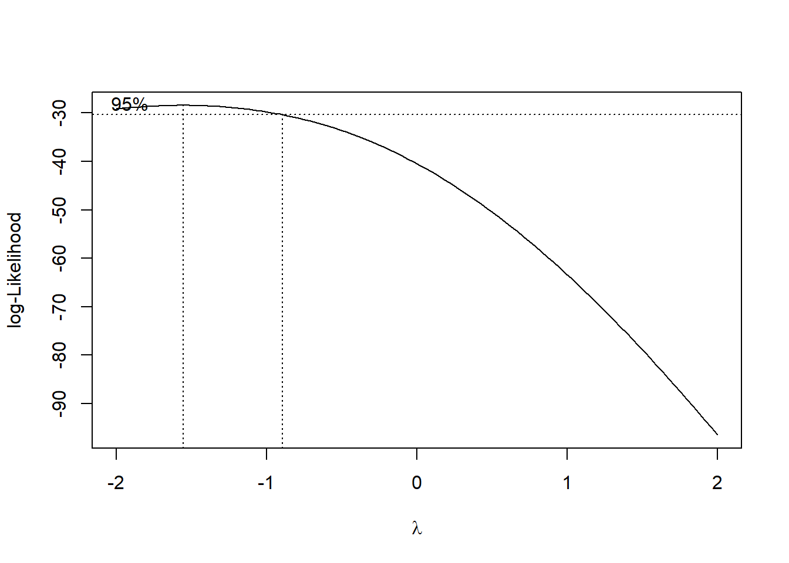
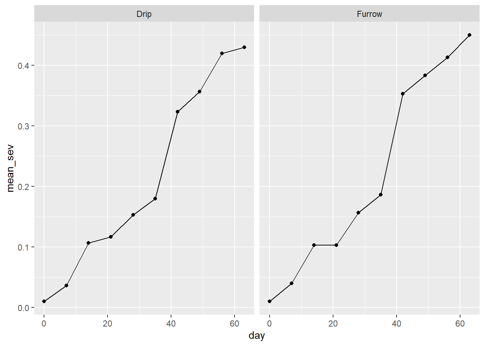

library(tidyverse)
library(gsheet)
soja <- gsheet2tbl("https://docs.google.com/spreadsheets/d/1bq2N19DcZdtax2fQW9OHSGMR0X2__Z9T/edit#gid=866852711")
soja <- soja |>
mutate(TRAT = as.factor(TRAT),
BLOCO = as.factor(BLOCO))Anova com DBC
Anova com blocos casualizados
Delineamento experimental que contém o terceiro príncipio da experimentação, que é o controle local. Este delineamento reduz as fontes de variação, com isso o erro experimental também é reduzido (não favorece um tratamento em detrimento de outro).
Importar os dados
Visualizar os dados
dfc<- soja |>
ggplot(aes(TRAT, DFC))+
geom_jitter(width= 0.05, color=
"gray70")+
stat_summary(fun.data =
"mean_cl_boot", size=0.5, color=
"black", alpha= 0.05)
dfcfer <- soja |>
ggplot(aes(TRAT, FER))+
geom_jitter(width= 0.05, color=
"gray70")+
stat_summary(fun.data =
"mean_cl_boot", size=0.5, color=
"black", alpha= 0.05)
ferprod <- soja |>
ggplot(aes(TRAT, PROD))+
geom_jitter(width= 0.05, color=
"gray70")+
stat_summary(fun.data =
"mean_cl_boot", size=0.5, color=
"black", alpha= 0.05)
prodlibrary(ggpubr)
ggarrange(dfc,fer,prod, ncol=3,nrow=1)Anova para a variável DFC
aov_dfc <- lm(DFC ~ TRAT + BLOCO,
data = soja)
anova(aov_dfc)Analysis of Variance Table
Response: DFC
Df Sum Sq Mean Sq F value Pr(>F)
TRAT 7 149.299 21.3284 51.5490 8.218e-12 ***
BLOCO 3 0.461 0.1537 0.3716 0.7743
Residuals 21 8.689 0.4138
---
Signif. codes: 0 '***' 0.001 '**' 0.01 '*' 0.05 '.' 0.1 ' ' 1library(performance)
check_heteroscedasticity(aov_dfc)OK: Error variance appears to be homoscedastic (p = 0.532).check_normality(aov_dfc)OK: residuals appear as normally distributed (p = 0.978).library(emmeans)
medias_dfc <- emmeans(aov_dfc, ~TRAT)
medias_dfc TRAT emmean SE df lower.CL upper.CL
1 10.88 0.322 21 10.21 11.54
2 6.42 0.322 21 5.76 7.09
3 6.05 0.322 21 5.38 6.72
4 4.75 0.322 21 4.08 5.42
5 4.20 0.322 21 3.53 4.87
6 4.00 0.322 21 3.33 4.67
7 4.08 0.322 21 3.41 4.74
8 4.58 0.322 21 3.91 5.24
Results are averaged over the levels of: BLOCO
Confidence level used: 0.95 pwpm(medias_dfc) 1 2 3 4 5 6 7 8
1 [10.87] <.0001 <.0001 <.0001 <.0001 <.0001 <.0001 <.0001
2 4.450 [ 6.42] 0.9896 0.0249 0.0017 0.0006 0.0009 0.0107
3 4.825 0.375 [ 6.05] 0.1329 0.0107 0.0040 0.0058 0.0628
4 6.125 1.675 1.300 [ 4.75] 0.9202 0.7173 0.8072 0.9999
5 6.675 2.225 1.850 0.550 [ 4.20] 0.9998 1.0000 0.9896
6 6.875 2.425 2.050 0.750 0.200 [ 4.00] 1.0000 0.9020
7 6.800 2.350 1.975 0.675 0.125 -0.075 [ 4.07] 0.9499
8 6.300 1.850 1.475 0.175 -0.375 -0.575 -0.500 [ 4.57]
Row and column labels: TRAT
Upper triangle: P values adjust = "tukey"
Diagonal: [Estimates] (emmean)
Lower triangle: Comparisons (estimate) earlier vs. laterlibrary(writexl)
library(multcomp)
cld2 <- cld(medias_dfc, Letters = LETTERS)
write_xlsx (cld2, "df.xlsx" )Anova para a variável FER
aov_fer <- lm(FER2 <- log(FER) ~ TRAT + BLOCO,
data = soja)
anova(aov_fer)Analysis of Variance Table
Response: log(FER)
Df Sum Sq Mean Sq F value Pr(>F)
TRAT 7 11.5210 1.64585 42.9665 4.838e-11 ***
BLOCO 3 0.2064 0.06880 1.7961 0.1788
Residuals 21 0.8044 0.03831
---
Signif. codes: 0 '***' 0.001 '**' 0.01 '*' 0.05 '.' 0.1 ' ' 1library(performance)
check_heteroscedasticity(aov_fer)Warning: Heteroscedasticity (non-constant error variance) detected (p = 0.035).check_normality(aov_fer)OK: residuals appear as normally distributed (p = 0.255).library(emmeans)
medias_fer <- emmeans(aov_fer, ~TRAT, type = "response")
medias_fer TRAT response SE df lower.CL upper.CL
1 20.02 1.959 21 16.33 24.54
2 5.68 0.556 21 4.63 6.96
3 3.81 0.373 21 3.11 4.67
4 3.08 0.301 21 2.51 3.78
5 3.24 0.317 21 2.64 3.97
6 2.98 0.292 21 2.43 3.65
7 3.37 0.330 21 2.75 4.13
8 3.48 0.341 21 2.84 4.27
Results are averaged over the levels of: BLOCO
Confidence level used: 0.95
Intervals are back-transformed from the log scale pwpm(medias_fer) 1 2 3 4 5 6 7 8
1 [20.02] <.0001 <.0001 <.0001 <.0001 <.0001 <.0001 <.0001
2 3.525 [ 5.68] 0.1252 0.0048 0.0110 0.0028 0.0204 0.0343
3 5.259 1.492 [ 3.81] 0.7832 0.9335 0.6440 0.9843 0.9976
4 6.500 1.844 1.236 [ 3.08] 0.9999 1.0000 0.9976 0.9842
5 6.178 1.753 1.175 0.951 [ 3.24] 0.9984 1.0000 0.9994
6 6.721 1.906 1.278 1.034 1.088 [ 2.98] 0.9842 0.9431
7 5.945 1.686 1.130 0.915 0.962 0.885 [ 3.37] 1.0000
8 5.750 1.631 1.093 0.885 0.931 0.856 0.967 [ 3.48]
Row and column labels: TRAT
Upper triangle: P values null = 1 adjust = "tukey"
Diagonal: [Estimates] (response) type = "response"
Lower triangle: Comparisons (ratio) earlier vs. laterlibrary(multcomp)
cld(medias_fer, Letters = LETTERS) TRAT response SE df lower.CL upper.CL .group
6 2.98 0.292 21 2.43 3.65 A
4 3.08 0.301 21 2.51 3.78 A
5 3.24 0.317 21 2.64 3.97 A
7 3.37 0.330 21 2.75 4.13 A
8 3.48 0.341 21 2.84 4.27 A
3 3.81 0.373 21 3.11 4.67 AB
2 5.68 0.556 21 4.63 6.96 B
1 20.02 1.959 21 16.33 24.54 C
Results are averaged over the levels of: BLOCO
Confidence level used: 0.95
Intervals are back-transformed from the log scale
P value adjustment: tukey method for comparing a family of 8 estimates
Tests are performed on the log scale
significance level used: alpha = 0.05
NOTE: If two or more means share the same grouping symbol,
then we cannot show them to be different.
But we also did not show them to be the same. b <- boxcox(lm(soja$FER ~1))
lambda <- b$x[which.max(b$y)]
lambda[1] -1.555556soja$FER2 <- (soja$FER ^lambda - 1) / lambdaAnova para a variável PROD
aov_prod <- lm(PROD ~ TRAT + BLOCO,
data = soja)
library(agricolae)
cv.model(aov_prod)[1] 8.057402anova(aov_prod)Analysis of Variance Table
Response: PROD
Df Sum Sq Mean Sq F value Pr(>F)
TRAT 7 2993906 427701 2.6367 0.04021 *
BLOCO 3 105665 35222 0.2171 0.88340
Residuals 21 3406431 162211
---
Signif. codes: 0 '***' 0.001 '**' 0.01 '*' 0.05 '.' 0.1 ' ' 1library(performance)
check_heteroscedasticity(aov_prod)OK: Error variance appears to be homoscedastic (p = 0.215).check_normality(aov_prod)OK: residuals appear as normally distributed (p = 0.542).library(emmeans)
medias_prod <- emmeans(aov_prod, ~TRAT)
medias_prod TRAT emmean SE df lower.CL upper.CL
1 4219 201 21 3800 4638
2 4935 201 21 4516 5354
3 5110 201 21 4691 5529
4 5140 201 21 4721 5559
5 5122 201 21 4703 5541
6 5256 201 21 4837 5675
7 5128 201 21 4709 5546
8 5078 201 21 4659 5497
Results are averaged over the levels of: BLOCO
Confidence level used: 0.95 pwpm(medias_prod) 1 2 3 4 5 6 7 8
1 [4219] 0.2430 0.0792 0.0640 0.0728 0.0272 0.0700 0.0985
2 -715.8 [4935] 0.9983 0.9953 0.9974 0.9430 0.9968 0.9995
3 -890.8 -175.0 [5110] 1.0000 1.0000 0.9994 1.0000 1.0000
4 -921.0 -205.3 -30.3 [5140] 1.0000 0.9999 1.0000 1.0000
5 -902.8 -187.0 -12.0 18.3 [5122] 0.9997 1.0000 1.0000
6 -1037.0 -321.3 -146.3 -116.0 -134.3 [5256] 0.9998 0.9981
7 -908.3 -192.5 -17.5 12.8 -5.5 128.8 [5127] 1.0000
8 -859.0 -143.3 31.7 62.0 43.7 178.0 49.2 [5078]
Row and column labels: TRAT
Upper triangle: P values adjust = "tukey"
Diagonal: [Estimates] (emmean)
Lower triangle: Comparisons (estimate) earlier vs. laterlibrary(multcomp)
medias_prod_grupo <- cld(medias_prod, Letters = LETTERS)
medias_prod_grupo TRAT emmean SE df lower.CL upper.CL .group
1 4219 201 21 3800 4638 A
2 4935 201 21 4516 5354 AB
8 5078 201 21 4659 5497 AB
3 5110 201 21 4691 5529 AB
5 5122 201 21 4703 5541 AB
7 5128 201 21 4709 5546 AB
4 5140 201 21 4721 5559 AB
6 5256 201 21 4837 5675 B
Results are averaged over the levels of: BLOCO
Confidence level used: 0.95
P value adjustment: tukey method for comparing a family of 8 estimates
significance level used: alpha = 0.05
NOTE: If two or more means share the same grouping symbol,
then we cannot show them to be different.
But we also did not show them to be the same. Visualização das médias e barra de erro.
O pacote writexl e função write_xlsx() permitem exportar data frames para o formato Excel, permitindo que os dados sejam facilmente compartilhados e analisados em outras plataformas.
df_prod <- data.frame(medias_prod_grupo)
df_prod |>
ggplot(aes(TRAT, emmean))+
geom_point()+
ylim(3000,6500)+
geom_errorbar(aes(min = lower.CL,
max = upper.CL),
width = 0.1)+
annotate(geom = "text", x = 1.2, y = 4200,
label = "A")
knitr::kable(df_prod |> dplyr::select(TRAT, emmean, .group))| TRAT | emmean | .group | |
|---|---|---|---|
| 1 | 1 | 4219.25 | A |
| 2 | 2 | 4935.00 | AB |
| 8 | 8 | 5078.25 | AB |
| 3 | 3 | 5110.00 | AB |
| 5 | 5 | 5122.00 | AB |
| 7 | 7 | 5127.50 | AB |
| 4 | 4 | 5140.25 | AB |
| 6 | 6 | 5256.25 | B |
library(writexl)
write_xlsx(df_prod, "df.xlsx")Dados de severidade
curve <- gsheet2tbl("https://docs.google.com/spreadsheets/d/1bq2N19DcZdtax2fQW9OHSGMR0X2__Z9T/edit#gid=1807247585")curve |>
group_by(day, Irrigation) |>
summarise(mean_sev = mean(severity)) |>
ggplot(aes(day, mean_sev)) +
geom_point(which = 0.05)+
geom_line()+
facet_wrap(~~Irrigation)
Cálculo da Área Abaixo da Curva de progressoo da Doença (AACPD)
Criando uma nova variável na planilha (chamada AACPD). Então, pode-se calcular a anova a partir dessa variável (AACPD).
library(epifitter)
curve2 <- curve |>
group_by(Irrigation, rep) |>
summarise(aacpd = AUDPC(day,severity))
m_curve <- lm(aacpd ~Irrigation + factor(rep),
data = curve2)
anova(m_curve) Analysis of Variance Table
Response: aacpd
Df Sum Sq Mean Sq F value Pr(>F)
Irrigation 1 0.23602 0.236017 10.605 0.08275 .
factor(rep) 2 0.61291 0.306454 13.771 0.06770 .
Residuals 2 0.04451 0.022254
---
Signif. codes: 0 '***' 0.001 '**' 0.01 '*' 0.05 '.' 0.1 ' ' 1library(agricolae)
cv.model(m_curve)[1] 1.097572